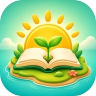

今天也学懂一点点，让英语慢慢长大。
每天20—30分钟：先理解，再开口，最后用小测找出没记牢的地方。
今日 0 / 7 项
每天20—30分钟：先理解，再开口，最后用小测找出没记牢的地方。
完成任务获得小太阳，照顾它健康成长。

添加后会出现独立应用图标，可像普通App一样全屏打开；学习记录仍保存在当前设备。
单词、句子和故事都可下载到本机
用中文说明场景与规则，知道为什么这样说。
点读单词和例句，跟读三遍，再替换关键词。
遮住答案想一想，比反复抄写记得更牢。
当天、次日、第3天、第7天再遇见一次。
先选年级和学期，再进入单元。每单元包含理解、单词、句型、对话、阅读和练习。
先看版本标识，再开始学习 每册均标注“目录已核对 / 待纸书复核 / 非新版同步”。本站提供的是按教材主题编写的原创讲解与练习，不是出版社教材原文或官方电子课件；单元名称不一致时，请以学校发放的纸质教材为准。
先看清整条学习路线，再快速进入任一册、任一单元。每个单元都整理学习目标、必备词、重点句型与学习任务。
知道这个单元最终要能听懂、说出和写出什么。
用必备词和重点句型建立自己的单元知识树。
按照理解、词汇、句型、对话、阅读、练习完成闭环。
当天、次日、第3天、第7天回看重点，避免学完就忘。
每单元一份50题足量综合卷；六年级另有60题小升初强化卷。提交后逐题显示词义、正确原因和错因。
50题单元卷只考当前单元；六年级衔接卷才会复习过往知识。本站仅参考福建公开卷常见题型结构，所有题目均为原创组卷，不是学校真题。
先不翻单词表，每题都主动回忆。
50题（六年级强化卷60题）全部完成后才能提交。
看正确答案和解释，说出错因。
建议隔1天、3天和7天再练。
先找到真实起点，再用自然拼读、听力和口语训练，把“认识单词”变成“听得懂、读得出、说得来”。
建议每天20—30分钟。按顺序完成，比一次学很多更有效。
不会的词进入“需要复习”，会的词按间隔复习再次出现。
按学习阶段分开查词。点击单词可以听发音，搜索时不会影响每日任务。
从26个字母开始，分清字母名称与常见发音，再进入自然拼读和音标课堂。适合零基础、三年级起步和需要补基础的孩子。
不死背术语：先看懂规则，再比较例句，最后独立选择。8个主题从三年级基础逐步学到六年级衔接。
用12周完成“基础整理—专项突破—综合运用—模拟冲刺”，每天40分钟，真正把小学知识带进初中。
学习只会获得小太阳，不会自动喂养。请每天回来亲手照顾当前植物。
按品质查看、解锁和培养植物伙伴。角色名称、造型设定和说明均为原创，不使用其他游戏素材。
坚持学习积累小太阳。越稀有的生命伙伴价格越高，终极形态也更炫酷。
保留小猫、小狗、小乌龟三种伙伴。每种动物都会从幼崽逐步成长为威风的大伙伴。
给孩子看每天的进步，给家长看需要帮助的地方。